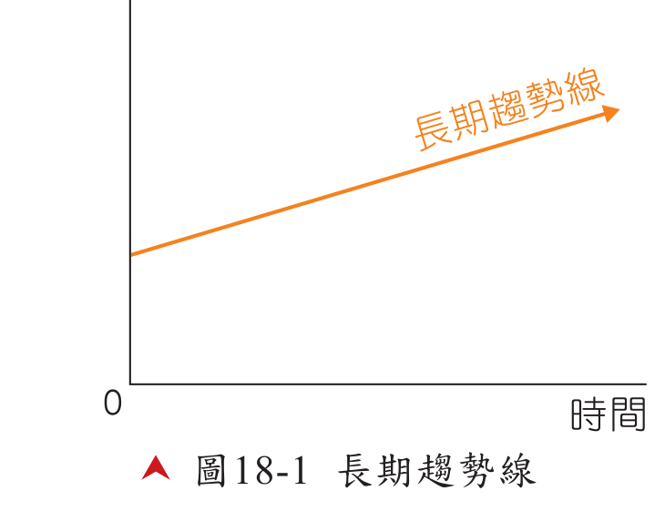
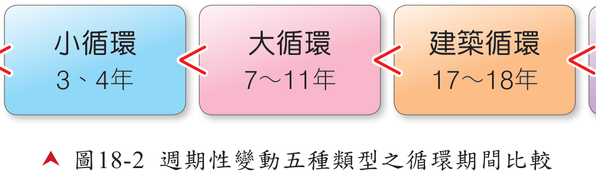
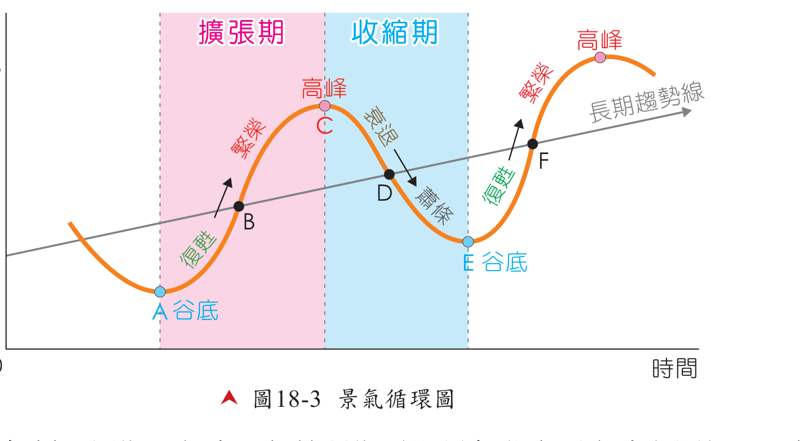
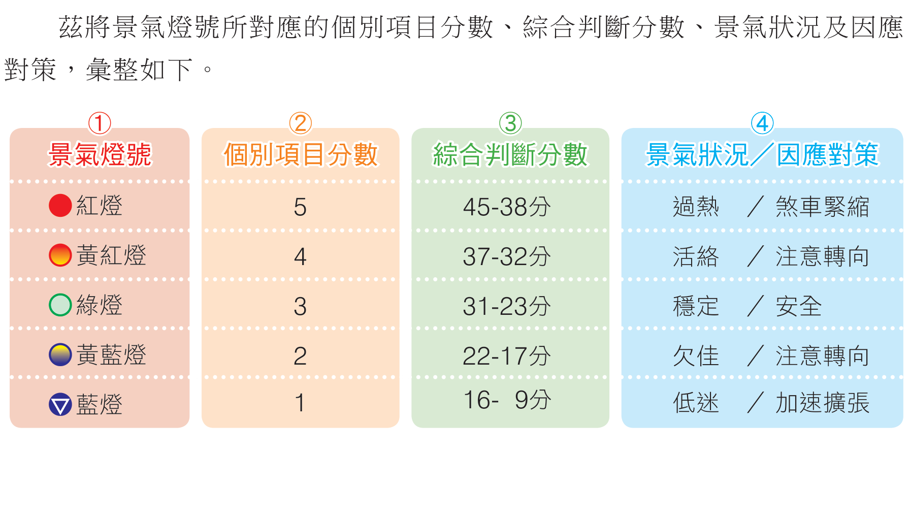
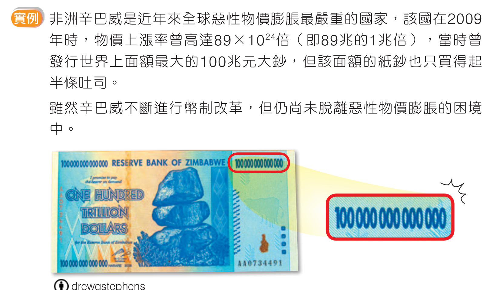
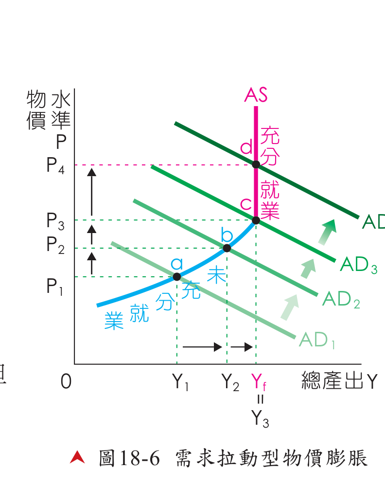
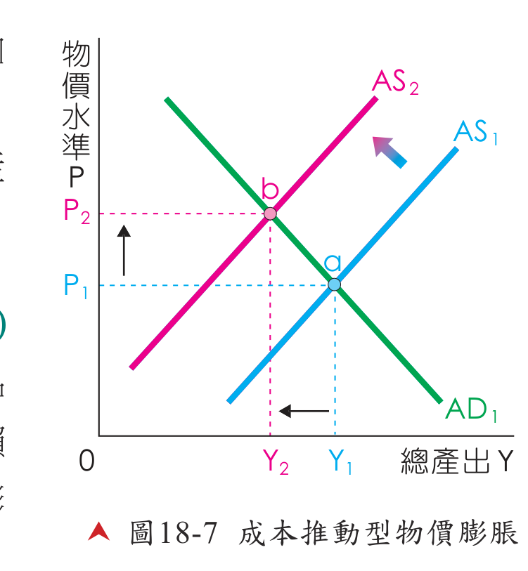
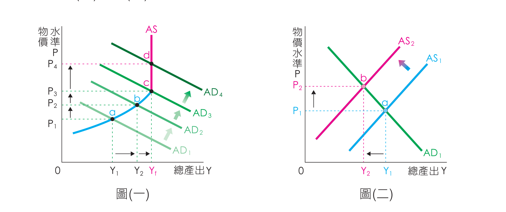
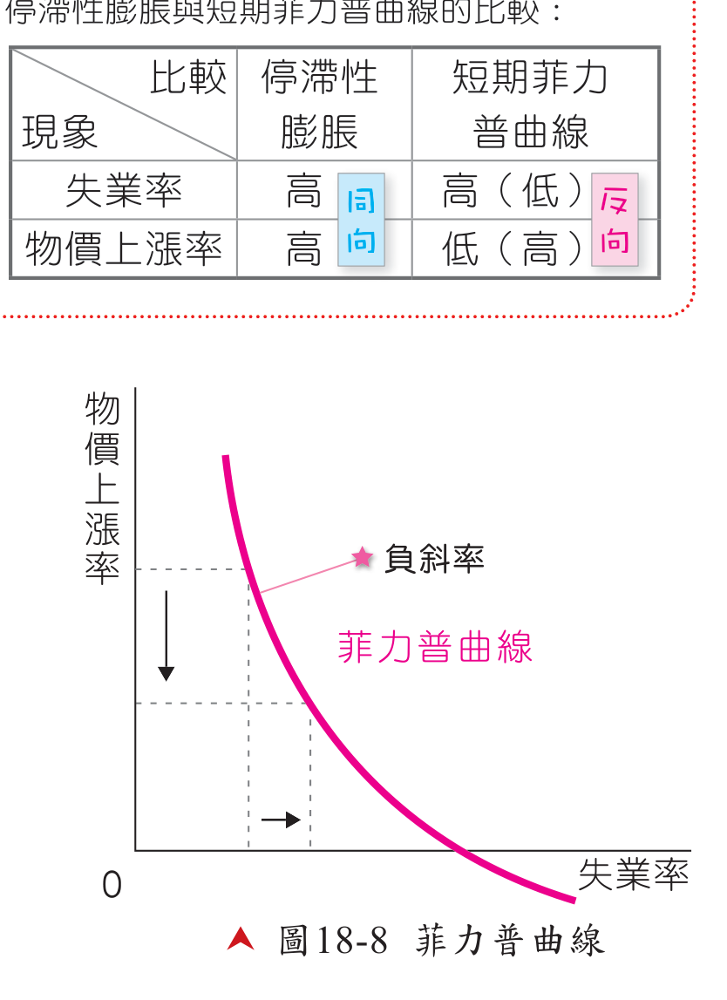
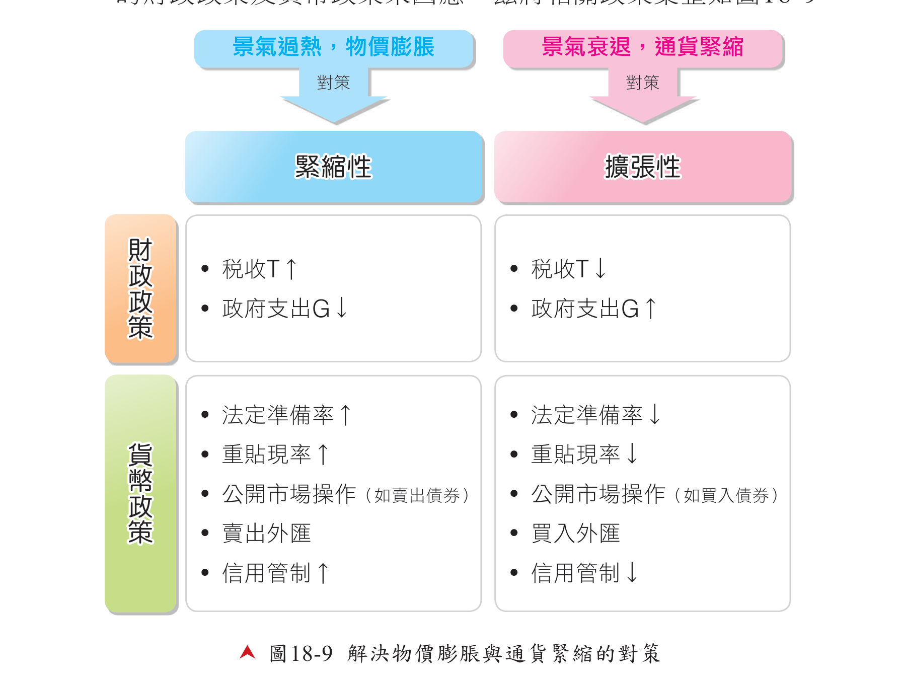

① 18-1 經濟波動的概念與四種變動型態
經濟活動並非永遠維持穩定不變，而是在不同時期呈現擴張與收縮的交替起伏。經濟學中將實質 GDP 或總體經濟變數隨時間波動的現象，統稱為經濟波動（Economic Fluctuations）。統計學與經濟學常將時間序列波動拆解為四大成分：
| 波動類型 | 英文代號與意義 | 期間與規律性 | 生活實務範例 |
|---|---|---|---|
| 1. 長期趨勢變動 （Long-term Trend） |
T：總體經濟變數（如 GDP、人口、技術）在長達數十年甚至百年的期間內，所呈現持續向上或向下的長期方向。 | 數十年以上，代表經濟體系長期的潛在產出成長路徑。 | 台灣過去半世紀由農業社會轉型為高科技半導體王國，實質 GDP 呈長期向上成長趨勢（如圖 18-1）。 |
| 2. 季節變動 （Seasonal Movement） |
S：受到一年四季氣候變化、自然條件或傳統民俗節慶影響，在一年以內呈現固定且具規則性的起伏變動。 | 一年以內，年年重覆發生且可被預期。 | • 中秋節前文旦柚與月餅需求大增。 • 春節過年前年貨採買與大掃除商機。 • 澎湖觀光冬天受強烈東北季風影響暫時歇業。 • 夏季高溫帶動冷氣、冰品與手搖飲料大賣。 |
| 3. 循環變動 （Cyclical Movement） |
C：在一年以上的期間內，經濟活動由谷底復甦、繁榮擴張，再轉為衰退、蕭條收縮的波浪式循環變動。 | 一年以上，非定期且長度不等，但方向具交替性。 | 一般所稱的「景氣循環」（如 2008 金融海嘯、後疫情經濟起伏），實質產出圍繞著長期趨勢線上下波動。 |
| 4. 不規則變動 （Irregular Movement） |
I：因突發性、非預期、非人為或天災人禍等外生隨機衝擊所引起的劇烈波動。 | 無規律性、無法預期且往往影響深遠。 | • 台灣九二一大地震造成電力中斷與產業停工。 • 2020 年嚴重特殊傳染性肺炎（COVID-19）全球大流行。 • 俄烏戰爭爆發導致國際原油與小麥暴漲。 |

二、統測必考焦點：週期性循環變動的五種類型比較
經濟學家依據循環週期的長短與成因，歸納出五種經典的經濟循環週期：
| 循環名稱 | 提出學者 | 循環週期長度 | 循環起因與核心驅動力 |
|---|---|---|---|
| ① 小循環 （姬青循環 Kitchin Cycles） |
姬青（J. Kitchin） | 3 ～ 4 年 | 存貨投資循環（Inventory Cycle）：廠商存貨去化與回補庫存之調整過程。 |
| ② 大循環 （朱格拉循環 Juglar Cycles） |
朱格拉（C. Juglar） （經濟循環之父） |
7 ～ 11 年 | 設備投資循環（Major Cycle）：廠房與機器設備折舊更新與重置投資。一般所指的「景氣循環」即是指此大循環！ |
| ③ 建築循環 （顧志耐循環 Kuznets Cycles） |
顧志耐（S. Kuznets） | 17 ～ 18 年 | 建築業景氣與人口流動循環（Building Cycle）：房屋耐用使用年限與住宅人口增長。 |
| ④ 長波循環 （康德拉提夫循環 Kondratiev） |
康德拉提夫（N. Kondratiev） | 50 ～ 60 年 | 重大技術革命與資源開採：如蒸汽機發明、鐵路修築、電力普及、汽車普及、電腦資訊革命。 |
| ⑤ 創新循環 （熊彼得循環 Schumpeter） |
熊彼得（J. Schumpeter） | 綜合長中短週期 | 企業家「創新（Innovation）」（創造性破壞）：新產品、新製程、新市場或新組織形成群聚效應。 |

② 18-2 景氣循環過程、景氣指標與理論
一、景氣循環的意義與四階段過程（熊彼得劃分法）
景氣循環（Business Cycle）是指實質 GDP 沿著長期趨勢線，呈現非定期且週而復始上下循環變動的現象。一個完整的景氣循環週期包含一個擴張期與一個收縮期：

| 比較項目 | 復甦期（A ➔ B） 長期趨勢線「下方」上升 |
繁榮期（B ➔ C） 長期趨勢線「上方」上升至高峰 |
衰退期（C ➔ D） 長期趨勢線「上方」下降 |
蕭條期（D ➔ E） 長期趨勢線「下方」下降至谷底 |
|---|---|---|---|---|
| 未來預期心理 | 較樂觀（信心回溫） | 最樂觀（群情激昂） | 較悲觀（信心鬆動） | 最悲觀（恐慌低迷） |
| 廠商投資與產出 | 漸多（添購設備） | 最多（產能滿載） | 漸少（減產去庫存） | 最少（停工關廠） |
| 就業率與失業率 | 就業漸高、失業漸低 | 就業最高、失業最低 | 就業漸低、失業漸高 | 就業最低、失業最高 |
| 物價水準與利率 | 漸升（需求回溫） | 最高（通膨壓力大、升息） | 漸跌（買氣下滑） | 最低（通縮壓力、降息） |
二、景氣指標（行政院國家發展委員會國發會編製）
國發會每月公布兩大景氣衡量工具：「景氣動向指標」與「景氣對策信號」。
1. 景氣動向指標（三大類別對照）：
- 領先指標（7 項）：反映「未來 3 ～ 6 個月」的景氣走向。構成項目：外銷訂單動向指數、實質貨幣總計數 M1B、股價指數、工業及服務業受僱員工淨進入率、建築物開工樓地板面積、實質半導體設備進口值、製造業營業氣候測驗點。
- 同時指標（7 項）：反映「當前（當時）」的景氣實況。構成項目：工業生產指數、電力（企業）總用電量、製造業銷售量指數、批發零售及餐飲業營業額、非農業部門就業人數、實質海關出口值、實質機械及電機設備進口值。
- 落後指標（5 項）：用來「驗證與確認過去」的景氣波動。構成項目：失業率、製造業單位產出勞動成本指數、金融業隔夜拆款利率、全體金融機構放款和投資、製造業存貨價值。
2. 景氣對策信號（景氣五色燈號，統測必考）：

| 燈號名稱 | 個別項目得分 | 綜合判斷分數 | 當前景氣狀況判定 | 政府景氣因應對策與操作 |
|---|---|---|---|---|
| 🔴 紅燈 | 5 分 | 45 ～ 38 分 | 景氣過熱（Overheating） | 踩煞車！採取緊縮性貨幣與財政政策，防止物價飆漲。 |
| 🟠 黃紅燈 | 4 分 | 37 ～ 32 分 | 景氣轉向熱絡（活絡） | 密切注意景氣是否過熱，隨時準備因應。 |
| 🟢 綠燈 | 3 分 | 31 ～ 23 分 | 景氣穩定（Stable） | 最健康健全之理想狀態！維持既有政策。 |
| 🟡 黃藍燈 | 2 分 | 22 ～ 17 分 | 景氣轉向欠佳（欠佳） | 密切注意景氣是否下滑，隨時準備因應刺激。 |
| 🔵 藍燈 | 1 分 | 16 ～ 9 分 | 景氣低迷／蕭條（Slump） | 踩油門！採取擴張性貨幣與財政政策，刺激投資就業。 |
三、景氣循環理論：外生說 vs 內生說
- 外生說（外部因素衝擊引起）：
- 太陽黑子說（Jevons 傑逢斯）：太陽黑子活動影響氣候與農作物收成，進而牽動工業原料與總體景氣。
- 創新說（Schumpeter 熊彼得）：企業家重大發明與創新帶動投資熱潮，刺激景氣擴張；創新趨緩時景氣收縮。
- 政治景氣循環說（Nordhaus 諾德豪斯）：執政黨在選舉前採擴張政策討好選民刺激景氣，選後則採緊縮對抗通膨。
- 內生說（經濟體制內部自我循環機制）：
- 純貨幣說（Hawtrey 郝特禮）：銀行體系信用過度擴張與緊縮引起。
- 貨幣過度投資說（Hayek 海耶克）：央行壓低利率使得市場利率低於自然利率，誘發過度投資與產能過剩。
- 消費不足說（Hobson 霍布森）：貧富差距懸殊，富人儲蓄過多而一般民眾消費力不足，導致商品滯銷。
- 心理說（Keynes 凱因斯、Pigou 皮古）：企業家與投資大眾對未來「預期樂觀與悲觀」之集體心理波動。
③ 18-3 失業型態、自然失業與失業率計算
一、失業的種類（實際失業三大核心型態）
| 失業型態 | 意義與成因 | 自願／非自願 | 課本實務範例 | 政府因應對策 |
|---|---|---|---|---|
| 1. 摩擦性失業 （Frictional） |
由於勞動市場資訊不完全，求職者與雇主在媒合尋職過程中，因轉換工作或初入職場產生的短暫待業。 | 自願性失業 （可選擇立即就業但想找更好的） |
• 大學畢業生或役男退伍剛出社會找工作。 • 農曆春節後想轉換更好跑道而離職跳槽。 |
建立完善的就業資訊網絡、公立就業服務站媒合。 |
| 2. 結構性失業 （Structural） |
因產業結構轉型或技術進步，導致勞工擁有的技術與市場職缺需求不符合（技能落差）。 | 非自願性失業 （想工作但技能不符被淘汰） |
• 電腦文書興起導致傳統中文打字員失業。 • 紡織傳產工廠外移，工人無法勝任半導體工程師。 |
推動在職訓練與第二專長轉業培訓（如圖 18-5 勞動部計畫）。 |
| 3. 循環性失業 （Cyclical） |
因景氣衰退或蕭條、總需求不足，導致企業虧損、訂單縮減而裁員減薪。最受經濟學家重視！ | 非自願性失業 （景氣差被公司裁員） |
• 2008 年金融海嘯來襲，全台工廠關廠裁員高達 35 萬人。 | 擴張性財政與貨幣政策（降息、減稅、擴大公共建設振興經濟）。 |
• 自然失業（Natural Unemployment）：由摩擦性失業與結構性失業組成（任何健全社會都不可避免）。
• 自然失業率公式：
充分就業絕不等於失業率為 0！當經濟體系的「循環性失業 ＝ 0」，亦即實際失業率等於自然失業率時，社會資源已達充分利用，即稱為充分就業！
二、特殊的失業型態（統計分類上的陷阱）
- 季節性失業（Seasonal Unemployment）：工作受季節性限制（如農夫農閒、澎湖民宿冬天停業）。在我國勞動力統計標準中，仍列為「就業人口」！
- 隱藏性失業（Disguised Unemployment）：表面有工作，但才能未發揮、學非所用或工時被迫縮減，邊際產量 \(MP_L = 0\)（如博士跑去開計程車掃街、受疫情衝擊企業協商實施「無薪假／減班休息」）。
三、人口分類架構與三大指標公式（統測高頻計算題）
| 指標名稱 | 標準數學計算公式 | 母體與分母陷阱 |
|---|---|---|
| 勞動力 （Labor Force） |
勞動力 ＝ 就業人口 ＋ 失業人口 | 排除非勞動力！（非勞動力：在學學生、料理家務、退休高齡、身心障礙、想工作但未找工作的「怯志工作者」）。 |
| 失業率 （Unemployment Rate） |
失業率 ＝ 失業人口勞動力 × 100% | 分母是「勞動力」，絕對不是總人口或 15 歲以上民間人口！ |
| 就業率 （Employment Rate） |
就業率 ＝ 就業人口勞動力 × 100% | 就業率 ＋ 失業率 ＝ 100%（或 ＝ 1） |
| 勞動參與率 （Labor Force Participation） |
勞動參與率 ＝ 勞動力15 歲以上民間人口 × 100% | 衡量一國潛在民間勞動力願意投入勞動市場的意願比例。 |
④ 18-4 物價膨脹成因與菲力普曲線
物價膨脹（Inflation，通貨膨脹）是指一段期間內，社會上的一般物價水準呈現「全面性且持續性上漲」的現象。單一商品漲價或短暫漲價後回跌，皆不算物價膨脹。
一、物價膨脹的類型
- 依物價上漲速度區分：
- 爬升型（Creeping Inflation，溫和）：年增率在 5% 以下，提供廠商溫和利潤誘因，促進投資就業，有利經濟成長（台灣長期即屬此型態）。
- 急遽型（Galloping Inflation，奔馳）：年增率達兩位數（10% 以上）。
- 惡性物價膨脹（Hyperinflation）：物價以極其驚人的速度暴漲，紙幣實質購買力形同廢紙，造成幣制崩潰（如非洲辛巴威發行 100 兆大鈔買不起半條吐司，圖 18-6；民國 38 年台灣四萬換一塊發行新台幣改革）。

二、物價膨脹成因與 AS-AD 模型圖解（統測必考大對照）

1. 需求拉動型（Demand-Pull）：
• 成因：「太多的貨幣追逐太少的商品」，消費、投資或政府支出過度擴張，使總需求曲線 AD 右移。
• 衝擊效果：在未充分就業時，物價 P 漲且產出 Y 增加；一旦達到充分就業（AS 為垂直線），產出無法再增加，物價呈垂直飆漲！

2. 成本推動型（Cost-Push）：
• 成因：工資暴漲、國際石油或原料價格飆升，導致生產成本大幅提高，總供給曲線 AS 向左上方移動。
• 致命危機：引發「停滯性物價膨脹（Stagflation）」——物價 P 持續上漲，但實質產出 Y 萎縮、失業率攀升，最難以用傳統單一政策收拾！

三、菲力普曲線與痛苦指數

• 短期菲力普曲線（負斜率）：說明短期內「失業率」與「物價上漲率」存在反向抵換（Trade-off）關係。政府若想降低失業率，必須容忍較高的物價上漲率；反之，若想抑制物價，就必須承受較高的失業率。
• 停滯性通膨的衝擊：當發生停滯性物價膨脹（高失業率 ＋ 高通膨率）時，傳統抵換關係破滅，菲力普曲線整條向右上方平行位移！
⑤ 18-4 通膨衝擊、通貨緊縮與總體對策
一、物價膨脹的不利影響與交易成本增加
- 菜單成本（Menu Cost）：商品價格快速變動，餐廳必須頻繁重印菜單、超市頻繁更新價格條碼所衍生的實體成本。
- 皮鞋成本（Shoe-leather Cost）：手持現鈔實質購買力天天縮水，民眾被迫頻繁跑銀行提款或搶購保值物資，導致皮鞋磨損所比喻的交易成本。
- 資訊成本（Information Cost）：物價混亂難以掌握，消費者與廠商須花費大量時間心力到處訪價比價。
二、統測金牌必考：物價膨脹引起的所得與財富重分配
| 經濟主體角色與資產型態 | 物價膨脹期間之利害得失 | 經濟原因剖析 |
|---|---|---|
| 債權人（放款者、借錢給別人者） | 受損（不利 ✘） | 收回的本金與利息實質購買力大幅縮水，被通膨侵蝕。 |
| 債務人（借款者、背負房貸者） | 獲利（有利 ✔） | 以貶值的便宜貨幣償還固定面額債務，實質還款負擔減輕。 |
| 固定所得者（公教、勞工固定薪、退休年金） | 受損（不利 ✘） | 薪資調整追不上物價漲幅，實質所得嚴重縮水。 |
| 非固定所得者（企業家、獨資資本家、股東） | 獲利（有利 ✔） | 產品售價可隨物價調高，銷貨營收暴增，獲利擴大。 |
| 貨幣性資產持有者（現金、銀行活期定存） | 受損（不利 ✘） | 名目存款利息追不上通膨，實質利率轉為負值。 |
| 實體資產持有者（土地、黃金、不動產房市） | 獲利（有利 ✔） | 不動產與貴重金屬具抗通膨保值特質，資產價格水漲船高。 |
三、通貨緊縮（Deflation）的危機
通貨緊縮是指社會上一般物價水準「持續下跌」，且伴隨經濟成長衰退、生產萎縮與失業攀升的惡性循環（通貨緊縮螺旋）。消費者預期未來物價會更便宜而延後消費，廠商產品賣不出去被迫減產裁員，造成比通膨更難治癒的長期蕭條。
四、解決物價膨脹與通貨緊縮的總體對策大彙整（圖 18-9）

| 政策工具類別 | 面臨「物價膨脹」之對策（抑制需求） | 面臨「通貨緊縮／蕭條」之對策（刺激需求） |
|---|---|---|
| 財政政策 （Fiscal Policy） |
緊縮性財政政策： • 減少政府公共支出（G ↓） • 增加稅收／提高稅率（T ↑） |
擴張性財政政策： • 增加政府公共投資（G ↑） • 減少稅收／降稅補貼（T ↓） |
| 貨幣政策 （Monetary Policy） |
緊縮性貨幣政策： • 調高法定存款準備率 • 調高重貼現率（升息） • 在公開市場「賣出」公債有價證券（收回游資） |
擴張性貨幣政策： • 調低法定存款準備率 • 調低重貼現率（降息） • 在公開市場「買入」公債有價證券（釋出資金） |
| 其他行政手段 | • 實施所得政策（薪資與物價管制上限） • 打擊囤積居奇與聯合壟斷壟價 |
• 發放振興消費券、補貼就業與觀光產業 |
⑥ 課本原題即測即評 (8 題精選統測必考真題)
點擊正確選項即可查看即時判定與精準名師解析：